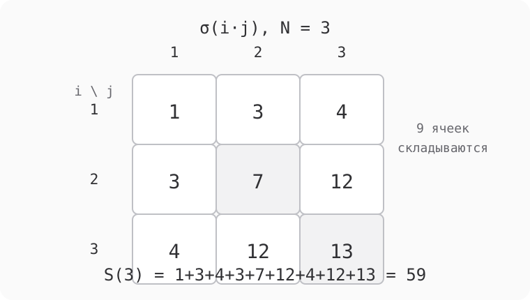
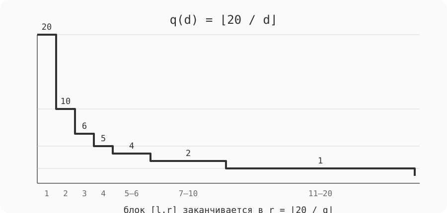

Сумма сумм делителей
Условие задачи
Обозначим через
$$\sigma(n)=\sum_{d\mid n}d$$
сумму положительных делителей числа $n$. Требуется быстро вычислять двойную сумму
$$S(N)=\sum_{x=1}^{N}\sum_{y=1}^{N}\sigma(xy).$$
Полное условие и контрольные значения находятся на странице Project Euler 439. Прямой двойной цикл требует $N^2$ вычислений $\sigma$, поэтому при большом $N$ он не оставляет даже шанса. Но сначала надо получить правильную формулу: ускорять неверное тождество здесь особенно легко.
Проверка \(N=2\), которая ловит ошибку сразу
Для $N=2$ исходная сумма равна
$$ S(2)=\sigma(1)+\sigma(2)+\sigma(2)+\sigma(4) =1+3+3+7=14. $$
Моей первой почти рабочей формулой было включение–исключение по $\gcd(x,y)$, но без множителя $d$. Она даёт $15$ уже при $N=2$. Разница всего в единицу, поэтому на больших числах такую ошибку можно долго принимать за неверную границу блока или остаток по модулю. Правильное тождество имеет вид
$$ \boxed{ \sigma(xy)= \sum_{d\mid\gcd(x,y)} \mu(d)\,d\, \sigma\!\left(\frac{x}{d}\right) \sigma\!\left(\frac{y}{d}\right). } $$
Первый вывод: проверка на простых степенях
Обе части мультипликативны по паре $(x,y)$, поэтому достаточно проверить один простой $p$. Пусть $x=p^a$, $y=p^b$ и $a\le b$. В сумме по $d$ остаются только $d=1$ и $d=p$, потому что $\mu(p^j)=0$ при $j\ge2$. Получаем
$$ \sigma(p^a)\sigma(p^b) -p\,\sigma(p^{a-1})\sigma(p^{b-1}). $$
Раскрываем две геометрические прогрессии. Во втором произведении вычитаются ровно те пары степеней, в которых обе содержат хотя бы один $p$. После сокращения каждая степень $1,p,\ldots,p^{a+b}$ остаётся один раз:
$$ 1+p+\dots+p^{a+b}=\sigma(p^{a+b}). $$
Перемножая локальные равенства по всем простым, получаем тождество для произвольных $x$ и $y$. Именно множитель $p$, а в общей записи множитель $d$, восстанавливает вес общего простого делителя.
Второй вывод: делители произведения и включение–исключение
Теперь посмотрим на ту же формулу со стороны делителей. Произведение $\sigma(x)\sigma(y)$ перебирает пары
$$r\mid x,\qquad s\mid y$$
с весом $rs$. Если $x$ и $y$ взаимно просты, отображение $(r,s)\mapsto rs$ однозначно и сразу даёт $\sigma(xy)$. Когда у $x$ и $y$ есть общий простой, одна и та же степень этого простого распределяется между $r$ и $s$ несколькими способами.
Включение–исключение помечает набор общих простых квадратсвободным числом $d\mid\gcd(x,y)$. Деление $x$ и $y$ на $d$ удаляет по одной общей копии каждого выбранного простого, $\mu(d)$ задаёт знак поправки, а множитель $d$ возвращает её арифметический вес. В развёрнутом виде это
$$ \sum_{d\mid\gcd(x,y)} \mu(d)d \sum_{r\mid x/d}\sum_{s\mid y/d}rs. $$
Для каждого простого это включение–исключение оставляет ровно одну копию каждой допустимой степени делителя $xy$. Так снова получается $\sum_{t\mid xy}t=\sigma(xy)$, но теперь видно, откуда геометрически берётся вес $d$.
Суммирование тождества
Подставляем тождество в двойную сумму и меняем порядок суммирования:
$$ \begin{aligned} S(N) &= \sum_{x,y\le N} \sum_{d\mid\gcd(x,y)} \mu(d)d\, \sigma(x/d)\sigma(y/d)\\ &= \sum_{d\le N}\mu(d)d \left( \sum_{m\le N/d}\sigma(m) \right)^2. \end{aligned} $$
Введём
$$A(M)=\sum_{n\le M}\sigma(n).$$
Тогда основная формула становится компактной:
$$ \boxed{ S(N)= \sum_{d\le N} \mu(d)d\, A\!\left(\left\lfloor\frac Nd\right\rfloor\right)^2. } $$

Две точные формы для \(A(M)\)
Первая форма получается, если каждый делитель $e$ внести во все его кратные:
$$ \boxed{ A(M)=\sum_{e=1}^{M}e\left\lfloor\frac Me\right\rfloor. } $$
Вторая форма перебирает вторую координату разложения $n=et$. Для фиксированного $t$ суммируются все $e\le M/t$, то есть треугольное число
$$T(q)=\frac{q(q+1)}2.$$
Поэтому
$$ \boxed{ A(M)=\sum_{t=1}^{M} T\!\left(\left\lfloor\frac Mt\right\rfloor\right). } $$
Эти формулы считаются разными прямыми способами и удобны как взаимная проверка. В реализации для всех малых $M$ дополнительно сравнивается буквальная сумма $\sigma(1)+\dots+\sigma(M)$.
Плато функции \(\lfloor M/t\rfloor\)
Вторая формула всё ещё содержит $M$ слагаемых, если идти по каждому $t$. Но частное
$$q=\left\lfloor\frac Mt\right\rfloor$$
остаётся постоянным на целом блоке. Если блок начинается в $l$, он заканчивается в
$$r=\left\lfloor\frac Mq\right\rfloor.$$
Значит, весь блок даёт $(r-l+1)T(q)$, после чего можно перейти сразу к $r+1$. Различных частных только порядка $\sqrt M$: большие значения встречаются на коротких начальных блоках, малые — на длинных конечных.

Настоящее узкое место — взвешенная сумма Мёбиуса
После группировки по одинаковому частному хочется заменить сумму весов на обычную функцию Мертенса $\sum\mu(k)$. Это снова почти правильный ход: в формуле стоит не $\mu(k)$, а $k\mu(k)$. Нужна именно функция
$$\boxed{W(n)=\sum_{k\le n}k\mu(k).}$$
Обычного массива до требуемой границы недостаточно. Малые значения $W$ удобно получить линейным решетом, а большие — рекурсией и мемоизацией.
Рекурсия для \(W(n)\)
Рассмотрим сумму
$$ \sum_{m\le n}m\, W\!\left(\left\lfloor\frac nm\right\rfloor\right). $$
Раскрывая $W$, получаем
$$ \sum_{md\le n}md\,\mu(d) = \sum_{r\le n}r\sum_{d\mid r}\mu(d) =1. $$
В последней сумме всё обнуляется, кроме $r=1$. Слагаемое $m=1$ равно $W(n)$, поэтому
$$ W(n)= 1-\sum_{m=2}^{n} m\,W\!\left(\left\lfloor\frac nm\right\rfloor\right). $$
Эту сумму тоже надо брать блоками. На отрезке $[l,r]$ частное равно $q$, а сумма коэффициентов $m$ равна $T(r)-T(l-1)$. Получается рабочая рекурсия
$$ \boxed{ W(n)= 1-\sum_{\substack{[l,r]\\l\ge2}} \bigl(T(r)-T(l-1)\bigr)W(q), \quad q=\left\lfloor\frac nl\right\rfloor, \quad r=\left\lfloor\frac nq\right\rfloor. } $$
Во всех рекурсивных вызовах $q
В исходной сумме по $d$ берём максимальный блок $[l,r]$, на котором
$$q=\left\lfloor\frac Nd\right\rfloor$$
постоянно. Значение $A(q)^2$ можно вынести, а вес блока равен разности двух
взвешенных префиксов:
$$
\boxed{
S(N)=
\sum_{\text{блоки }[l,r]}
A(q)^2\bigl(W(r)-W(l-1)\bigr).
}
$$
Теперь во внешнем цикле порядка $\sqrt N$ блоков. Значения $A(q)$ и $W(q)$ повторяются,
поэтому оба вида частичных сумм мемоизируются. Все промежуточные величины знаковые:
$W$ может быть отрицательной, это надо корректно учитывать перед приведением по модулю.
Ядро статьи использует точные целые числа. Это важно уже для проверки при $N=10^5$:
сама сумма значительно превосходит безопасный диапазон обычного JavaScript-числа,
хотя нужен только её остаток.
Каждая формула проверяется не только итоговым числом:
После этого воспроизводятся контрольные значения из условия:
Первая инверсия Мёбиуса уменьшает двойную сумму до одномерной, но это ещё не решение:
прямой проход по всем $d$ остаётся слишком длинным. Настоящее ускорение появляется только
после двух одинаковых по духу группировок — для $A(M)$ и для финальной суммы — и после
замены обычной функции Мертенса на взвешенный префикс $W(n)$.
В результате вся вычислительная схема строится вокруг плато функции
$\lfloor N/d\rfloor$. На каждом плато сложная арифметика сворачивается в одно значение
$A(q)$ и одну разность $W(r)-W(l-1)$, а маленькие прямые проверки не дают потерять
множитель $d$ или перепутать границы блока.
Финальное суммирование блоками
Порядок вычислений
Проверки
Итог